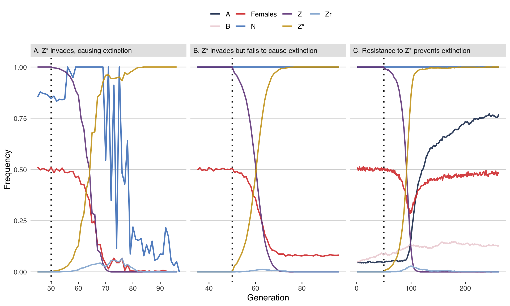
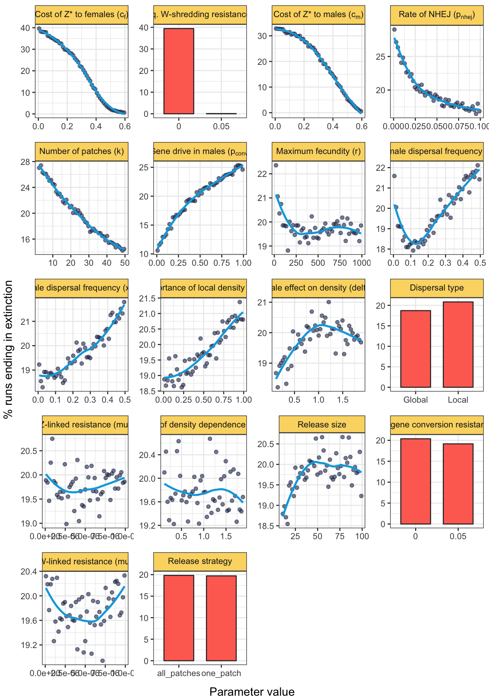
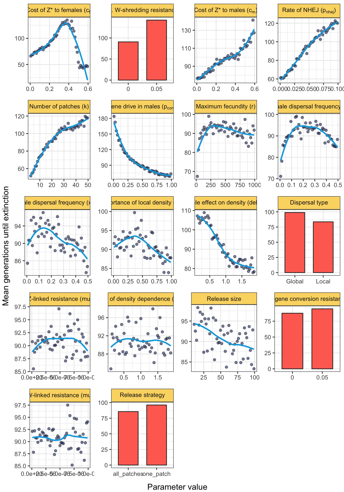
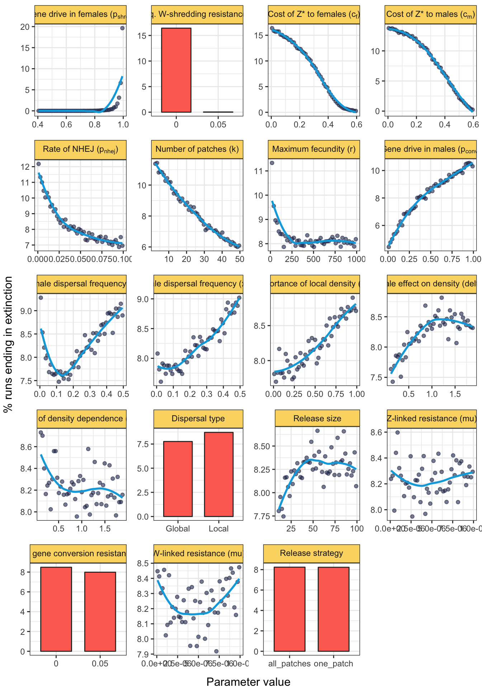
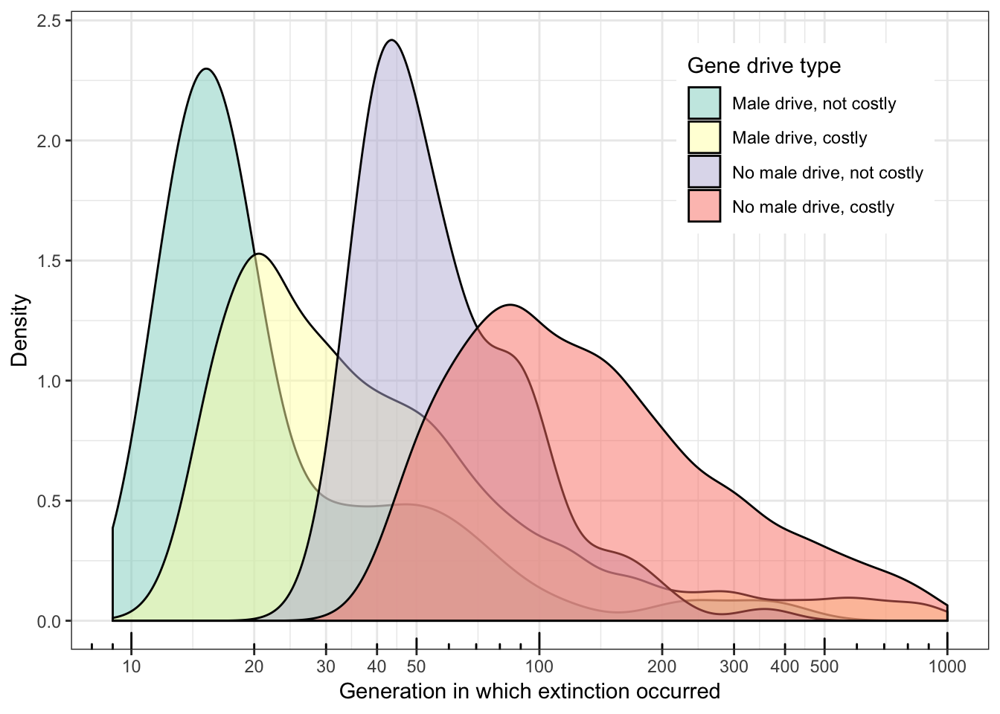

Last updated: 2019-09-11
Checks: 7 0
Knit directory: W_shredder/
This reproducible R Markdown analysis was created with workflowr (version 1.4.0). The Checks tab describes the reproducibility checks that were applied when the results were created. The Past versions tab lists the development history.
Great! Since the R Markdown file has been committed to the Git repository, you know the exact version of the code that produced these results.
Great job! The global environment was empty. Objects defined in the global environment can affect the analysis in your R Markdown file in unknown ways. For reproduciblity it’s best to always run the code in an empty environment.
The command set.seed(20180716) was run prior to running the code in the R Markdown file. Setting a seed ensures that any results that rely on randomness, e.g. subsampling or permutations, are reproducible.
Great job! Recording the operating system, R version, and package versions is critical for reproducibility.
Nice! There were no cached chunks for this analysis, so you can be confident that you successfully produced the results during this run.
Great job! Using relative paths to the files within your workflowr project makes it easier to run your code on other machines.
Great! You are using Git for version control. Tracking code development and connecting the code version to the results is critical for reproducibility. The version displayed above was the version of the Git repository at the time these results were generated.
Note that you need to be careful to ensure that all relevant files for the analysis have been committed to Git prior to generating the results (you can use wflow_publish or wflow_git_commit). workflowr only checks the R Markdown file, but you know if there are other scripts or data files that it depends on. Below is the status of the Git repository when the results were generated:
Ignored files:
Ignored: .DS_Store
Ignored: .Rhistory
Ignored: .Rproj.user/
Ignored: Proc_B_manuscript/.DS_Store
Ignored: code/.DS_Store
Ignored: data/
Ignored: figures/.DS_Store
Ignored: output/
Untracked files:
Untracked: .gitignore
Note that any generated files, e.g. HTML, png, CSS, etc., are not included in this status report because it is ok for generated content to have uncommitted changes.
These are the previous versions of the R Markdown and HTML files. If you’ve configured a remote Git repository (see ?wflow_git_remote), click on the hyperlinks in the table below to view them.
| File | Version | Author | Date | Message |
|---|---|---|---|---|
| Rmd | 3ee434a | lukeholman | 2019-09-11 | final touches |
| html | 3ee434a | lukeholman | 2019-09-11 | final touches |
| html | 40ce7d2 | lukeholman | 2019-09-09 | Build site. |
| Rmd | 12cf147 | lukeholman | 2019-09-09 | almost done |
| html | 9f1c407 | lukeholman | 2019-09-09 | Build site. |
| Rmd | 3041bd8 | lukeholman | 2019-09-09 | First commit |
| html | 3041bd8 | lukeholman | 2019-09-09 | First commit |
packages <- c("dplyr", "purrr", "ggplot2", "reshape2", "Cairo", "knitr", "stringr",
"latex2exp", "pander", "grid", "gridExtra", "ggthemes", "data.table",
"readr", "tibble", "kableExtra", "future", "future.apply", "parallel")
lapply(packages, library, character.only = TRUE, quietly = TRUE)
if(!file.exists("data/all_results.rds")){
files <- list.files(path = file.path(getwd(), "data"), pattern = "results_", full.names = TRUE)
files <- files[str_detect(files, "results_[:digit:]+.rds")]
n_files <- length(files)
# Open all the results files and bind them together into a tibble
results <- lapply(1:length(files),
function(i) {
if(i %% 10 == 0) print(paste("Doing file", i, "of", n_files))
readRDS(files[i]) %>% filter(cost_A == 0 & cost_B == 0)}) %>%
rbindlist() %>% as_tibble()
# Make sure each unique parameter space is run exactly once,
# unless it was expressly run multiple times using "realisations" (never used in this paper)
results <- results %>%
distinct(release_strategy, W_shredding_rate, Z_conversion_rate,
Zr_creation_rate, Zr_mutation_rate, Wr_mutation_rate,
cost_Zdrive_female, cost_Zdrive_male, male_migration_prob,
female_migration_prob, migration_type, n_patches, softness,
male_weighting, density_dependence_shape, max_fecundity, realisations,
initial_A, initial_B, .keep_all = TRUE)
saveRDS(results, file = "data/all_results.rds")
} else results <- read_rds("data/all_results.rds")
results$went_extinct <- ifelse(results$outcome == "Population extinct", 1, 0)
results$migration_type[results$migration_type == "local"] <- "Local"
results$migration_type[results$migration_type == "global"] <- "Global"
# Command to upload the results file to Spartan - needed for Spartan to queue up all the parameter spaces not already finished
# scp /Users/lholman/Rprojects/W_shredder/data/all_results.rds lukeholman@spartan:/data/projects/punim0243/W_shredder/data/all_results.rds
# Helper function to get a list of all the model parameters that vary between runs
find_variable_parameters <- function(dat){
dat %>%
select(-id, -realisations, -generation_extinct, -generation_Zd_extinct,
-generation_W_extinct, -generation_Zd_fixed, -outcome, -went_extinct,
-initial_Wr, -initial_Zr) %>%
sapply(function(x) length(unique(x))) %>%
keep(~.x > 1) %>% names()
}
variable_parameters <- find_variable_parameters(results)
# combinations <- apply(combn(variable_parameters, 2), 2, paste0, collapse = " x ") # all 2-way combos of parameters
# Make a data frame to convert R-friendly names to figure-friendly names
nice_names <- data.frame(
original = variable_parameters,
new = gsub("_", " ", variable_parameters),
stringsAsFactors = FALSE) %>%
mutate(
new = gsub("rel", "Rel", new),
new = gsub("W shredding rate", "Gene drive in females ($p_{shred}$)", new),
new = gsub("Z conversion rate", "Gene drive in males ($p_{conv}$)", new),
new = gsub("Zr creation rate", "Rate of NHEJ ($p_{nhej}$)", new),
new = gsub("Zr mutation rate", "Z-linked resistance ($\\mu{_Z}$)", new),
new = gsub("Wr mutation rate", "W-linked resistance ($\\mu{_W}$)", new),
new = gsub("cost Zdrive female", "Cost of Z* to females ($c_f$)", new),
new = gsub("cost Zdrive male", "Cost of Z* to males ($c_m$)", new),
new = gsub("male migration prob", "Male dispersal frequency", new),
new = gsub("feMale dispersal frequency", "Female dispersal frequency (xf)", new),
new = gsub("Male dispersal frequency", "Male dispersal frequency (xm)", new),
new = gsub("xm", "$x_m$", new),
new = gsub("xf", "$x_f$", new),
new = gsub("migration type", "Dispersal type", new),
new = gsub("n patches", "Number of patches ($k$)", new),
new = gsub("softness", "Importance of local density ($\\psi$)", new),
new = gsub("male weighting", "Male effect on density ($\\delta$)", new),
new = gsub("density dependence shape", "Shape of density dependence ($\\alpha$)", new),
new = gsub("max fecundity", "Maximum fecundity ($r$)", new),
new = gsub("initial A", "Initial freq. W-shredding resistance allele A", new),
new = gsub("initial B", "Initial freq. gene conversion resistance allele B", new),
new = as.character(TeX(new))) %>%
mutate(new = gsub("mu", "\\mu", new))
# Split the results by the type of gene drive:
# A W-shredder with imperfect shredding (for supplement)
W_shredder <- results %>% filter(cost_Zdrive_female != 1)
# A W-shredder with perfect shredding (main figures)
perfect_W_shredder <- results %>% filter(cost_Zdrive_female != 1 & W_shredding_rate == 1 & Zr_creation_rate != 0)
# A female-sterilising gene drive (not plotted, none of these runs show extinction, even for parameter space 4 where I tried to help extinciton to happen)
female_sterilising <- results %>% filter(cost_Zdrive_female == 1)
# Function to format numbers nicely
pretty <- function(x) prettyNum(x, big.mark = ",", scientific = FALSE)
rm(results)I essentially ran the simulation until the figures ceased to look any different when I added extra random parameter spaces (generated by Latin hypercube sampling). The following shows the number of simualtion runs for a
n_runs <- tibble(
`Type of run` = c("W-shredder with p-shred in the range 0-1",
"W-shredder with p-shred = 1",
"Female-sterilising gene drive with c_f = 1"),
`Number of parameter spaces sampled` = pretty(c(nrow(W_shredder),
nrow(perfect_W_shredder),
nrow(female_sterilising)))
)
saveRDS(n_runs, file = "data/number_of_runs.rds")
n_runs %>% kable() %>% kable_styling()| Type of run | Number of parameter spaces sampled |
|---|---|
| W-shredder with p-shred in the range 0-1 | 1,810,247 |
| W-shredder with p-shred = 1 | 721,587 |
| Female-sterilising gene drive with c_f = 1 | 1,559,817 |
ids <- c("10021351271896", "10158427238012", "10003485256727") # 10258132461533
plot_run <- function(){
get_data <- function(model_id, allele_freqs_list, result_df, label){
df <- pluck_allele_freqs(model_id, allele_freqs_list)
alleles_to_plot <- group_by(df, allele) %>%
summarise(uniques = length(unique(frequency))) %>%
filter(uniques > 1) %>% # Don't plot alleles that stay at 0 whole time
pull(allele)
alleles_to_plot <- c(alleles_to_plot, "N")
df <- df[df$allele %in% alleles_to_plot, ]
df$frequency[df$allele == "N"] <- df$frequency[df$allele == "N"] /
max(df$frequency[df$allele == "N"])
paras <- result_df %>% mutate(id = as.character(id)) %>% filter(id == model_id)
last_generation <- tail(df,12) %>% select(allele, frequency)
# print(paras); print(last_generation)
df %>% mutate(facet = label,
allele = replace(allele, allele == "Zd", "Z*"),
allele = replace(allele, allele == "females", "Females"))
}
# x <- allele_freqs <- read_rds("data/results_1.rds")
# x %>% filter(outcome == "Population extinct" )
# filter(x, outcome == "Zd fixed without extinction" & initial_A == 0 & initial_B == 0)$id
allele_freqs <- read_rds("data/allele_freqs_1.rds")
data1 <- get_data(ids[1], allele_freqs, W_shredder, "A. Z* invades, causing extinction") %>%
filter(generation >= 45)
data1 <- data1 %>%
rbind(data.frame(generation = max(data1$generation)+1, allele = "N",
frequency = 0, facet = "A. Z* invades, causing extinction"))
data2 <- get_data(ids[2], allele_freqs, W_shredder, "B. Z* invades but fails to cause extinction") %>%
filter(generation >= 35)
data3 <- get_data(ids[3], allele_freqs, W_shredder, "C. Resistance to Z* prevents extinction")
# Pantone colours:
Marina <- "#4F84C4"
Navy <- "#223A5E"
Grenadine <- "#DA413D"
Primrose <- "#EED4D9"
Lilac <- "#774D8E"
Bluebell <- "#93B4D7"
cols <- c(Navy, Primrose, Grenadine, Marina, Lilac, "#CDA323", Bluebell)
rbind(data1, data2, data3) %>%
ggplot(aes(x = generation, y = frequency, colour = allele, group = allele)) +
geom_vline(xintercept = 50, linetype = 3, colour = "grey15", size = 0.9) +
geom_line(size = 0.9, alpha = 0.9) +
facet_wrap(~facet, scales = "free_x") +
theme_hc() +
scale_colour_manual(values = cols, name = "") +
theme(strip.text = element_text(hjust = 0),
strip.background = element_rect(fill = "grey90"),
legend.position = "top",
axis.ticks.y = element_blank()) +
xlab("Generation") + ylab("Frequency")
}
fig2 <- plot_run()fig2
| Version | Author | Date |
|---|---|---|
| 3041bd8 | lukeholman | 2019-09-09 |
Figure 2: Three illustrative runs of the simulation, showing evolution in response to the release of males carrying a W-shredder at Generation 50 (dotted line). In panel A, the driving \(Z^*\) allele fixed very quickly, causing population extinction through a shortage of females. In panel B, the \(Z^*\) allele fixed but did not cause extinction, because carrier females continued to produce some daughters due to incomplete W-shredding. In panel C, the \(Z^*\) allele invaded, which selected for the W-shredding resistance allele A, causing \(Z^*\) to go extinct by removing its transmission advantage. The population size is shown as a fraction of its maximum value of 10,000. Table S1 lists the parameter spaces used for these three runs.
table_S1 <- t(rbind(
data.frame(Panel = "A", W_shredder %>% filter(id == ids[1])),
data.frame(Panel = "B", W_shredder %>% filter(id == ids[2])),
data.frame(Panel = "C", W_shredder %>% filter(id == ids[3]))) %>%
select(release_strategy, W_shredding_rate,
Z_conversion_rate, Zr_creation_rate, Zr_mutation_rate,
Wr_mutation_rate, cost_Zdrive_female, cost_Zdrive_male,
male_migration_prob, female_migration_prob,
migration_type, n_patches, softness, male_weighting,
density_dependence_shape, max_fecundity, initial_A, initial_B))
nice_names2 <- data.frame(original = variable_parameters,
new = gsub("_", " ", variable_parameters),
stringsAsFactors = FALSE) %>%
mutate(
new = gsub("rel", "Rel", new),
new = gsub("W shredding rate", "Gene drive in females (p_shred)", new),
new = gsub("Z conversion rate", "Gene drive in males (p_conv)", new),
new = gsub("Zr creation rate", "Rate of NHEJ (p_nhej)", new),
new = gsub("Zr mutation rate", "Z-linked resistance (μ_Z)", new),
new = gsub("Wr mutation rate", "W-linked resistance (μ_W)", new),
new = gsub("cost Zdrive female", "Cost of Z* to females (c_f)", new),
new = gsub("cost Zdrive male", "Cost of Z* to males (c_m)", new),
new = gsub("male migration prob", "Male dispersal frequency", new),
new = gsub("feMale dispersal frequency", "Female dispersal frequency (x_f)", new),
new = gsub("Male dispersal frequency", "Male dispersal frequency (x_m)", new),
new = gsub("migration type", "Dispersal type", new),
new = gsub("n patches", "Number of patches (k)", new),
new = gsub("softness", "Importance of local density (ψ)", new),
new = gsub("male weighting", "Male effect on density (𝛿)", new),
new = gsub("density dependence shape", "Shape of density dependence (α)", new),
new = gsub("max fecundity", "Maximum fecundity (r)", new),
new = gsub("initial A", "Intial freq. W-shredding resistance allele A", new),
new = gsub("initial B", "Intial freq. gene conversion resistance allele B", new))
rownames(table_S1) <- nice_names2$new[match(rownames(table_S1), nice_names2$original)]
rownames(table_S1) <- gsub("[.]", "", rownames(table_S1))
colnames(table_S1) <- c("Panel A", "Panel B", "Panel C")
table_S1[table_S1 == "one_patch"] <- "All in one patch"
table_S1[table_S1 == "all_patches"] <- "Scattered over all patches"
table_S1 <- as.data.frame(table_S1, stringsAsFactors = FALSE)
for(i in 1:nrow(table_S1)){
if(!(table_S1[i, 1] %in% c("Local", "Scattered over all patches"))){
table_S1[i, ] <- format(round(as.numeric(table_S1[i, ]), 2), nsmall = 2)
if(max(as.numeric(table_S1[i, ])) > 5) table_S1[i, ] <- format(round(as.numeric(table_S1[i, ])), nsmall = 0)
}}Table S1: List of the parameter values used to generate the simulation runs shown in Figure 2.
table_S1 %>% kable(format = "html", escape = FALSE, digits=2) %>% kable_styling()| Panel A | Panel B | Panel C | |
|---|---|---|---|
| Release strategy | Scattered over all patches | All in one patch | All in one patch |
| Gene drive in females (p_shred) | 0.99 | 0.84 | 0.84 |
| Gene drive in males (p_conv) | 0.74 | 0.38 | 0.54 |
| Rate of NHEJ (p_nhej) | 0.07 | 0.04 | 0.03 |
| Z-linked resistance (μ_Z) | 0.00 | 0.00 | 0.00 |
| W-linked resistance (μ_W) | 0.00 | 0.00 | 0.00 |
| Cost of Z* to females (c_f) | 0.25 | 0.07 | 0.03 |
| Cost of Z* to males (c_m) | 0.10 | 0.04 | 0.40 |
| Male dispersal frequency (x_m) | 0.23 | 0.46 | 0.38 |
| Female dispersal frequency (x_f) | 0.50 | 0.34 | 0.26 |
| Dispersal type | Local | Global | Global |
| Number of patches (k) | 15 | 3 | 29 |
| Importance of local density (ψ) | 0.65 | 0.37 | 0.08 |
| Male effect on density (𝛿) | 1.78 | 0.99 | 0.20 |
| Shape of density dependence (α) | 1.27 | 1.25 | 1.60 |
| Maximum fecundity (r) | 697 | 788 | 188 |
| Intial freq W-shredding resistance allele A | 0.00 | 0.00 | 0.05 |
| Intial freq gene conversion resistance allele B | 0.00 | 0.00 | 0.05 |
find_percent_extinct <- function(variable, dataset, number_of_bins){
dataset <- dataset %>% rename(value = !! variable)
if(is.numeric(dataset$value) & length(unique(dataset$value)) > 5){
dataset <- dataset %>%
mutate(value_bin = cut(value, number_of_bins),
value = (gsub("]", "", gsub("[(]", "", value_bin))),
value = map_dbl(strsplit(value, split = ","), ~ mean(as.numeric(.x)))) %>%
group_by(value, value_bin)
} else {
dataset <- dataset %>% group_by(value)
}
output <- dataset %>%
summarise(n_extinct = sum(went_extinct == 1),
n_runs = n(),
percent_extinct = 100 * n_extinct / n_runs,
mean_extinction_time = mean(generation_extinct, na.rm = TRUE)) %>%
mutate(parameter = variable,
mean_extinction_time = replace(mean_extinction_time, is.nan(mean_extinction_time), NA))
if(nrow(output) < 5) output$value <- as.character(output$value)
output
}
make_one_plot <- function(dataset, response){
dataset$y <- dataset %>% pull(which(names(dataset) == response))
dataset$parameter <- nice_names$new[nice_names$original == dataset$parameter[1]]
if(nrow(dataset) != 2){
p <- ggplot(dataset, aes(value, y)) +
geom_point(alpha = 0.6, colour = "#263056")
} else {
p <- ggplot(dataset, aes(value, y)) +
geom_bar(stat = "identity", fill = "#ff6f61", width = 0.7, colour = "grey18")
}
if(dataset$parameter[1] %in% c("male_weighting", "density_dependence_shape")){
p <- p + geom_vline(xintercept = 1, linetype = 2, colour = "grey18")
}
p +
stat_smooth(method = "loess", se = FALSE, colour = "#00a9e0") +
labs(y = NULL, x = NULL) +
facet_wrap(~ parameter, labeller = label_parsed) +
theme_bw() +
theme(strip.background = element_rect(fill = "#fbd872"))
}
make_multiplot_data <- function(dat, cores){
dat <- mclapply(variable_parameters, find_percent_extinct, dataset = dat, number_of_bins = 51, mc.cores = cores)
out_list <- dat[order(sapply(dat, function(x) max(x$percent_extinct)), decreasing = TRUE)]
keep <- which(sapply(out_list, nrow) > 1)
out_list[keep]
}
make_multiplot <- function(multiplot_data, response){
left_axis_label <- ifelse(response == "percent_extinct", "% runs ending in extinction", "Mean generations until extinction")
multiplot_data %>%
map(~ make_one_plot(.x, response = response)) %>%
grid.arrange(grobs = ., left = left_axis_label, bottom = "Parameter value")
}
if(!file.exists("figures/fig_S1.rds")){
fig34_data <- make_multiplot_data(perfect_W_shredder, cores = 4)
figS1_data <- make_multiplot_data(W_shredder, cores = 4)
fig_3 <- make_multiplot(fig34_data, "percent_extinct")
fig_4 <- make_multiplot(fig34_data, "mean_extinction_time")
fig_S1 <- make_multiplot(figS1_data, "percent_extinct")
fig_3 %>% saveRDS(file = "figures/fig_3.rds")
fig_4 %>% saveRDS(file = "figures/fig_4.rds")
fig_S1 %>% saveRDS(file = "figures/fig_S1.rds")
fig_3 %>% ggsave(filename = "figures/fig_3.pdf", width = 9, height = 10)
fig_4 %>% ggsave(filename = "figures/fig_4.pdf", width = 9, height = 10)
fig_S1 %>% ggsave(filename = "figures/fig_S1.pdf", width = 9, height = 10)
} else {
fig_3 <- readRDS("figures/fig_3.rds")
fig_4 <- readRDS("figures/fig_4.rds")
fig_S1 <- readRDS("figures/fig_S1.rds")
}grid.newpage()
grid.draw(fig_3)
| Version | Author | Date |
|---|---|---|
| 3041bd8 | lukeholman | 2019-09-09 |
Figure 3: The plot shows the effect of each model parameter on the percentage of simulation runs in which the population went extinct, for simulations of a Z-linked W-shredder that completely prevents the production of daughters by females (\(p_{shred} = 1\)). The plot was generated by sampling evenly from the complete parameter space 721,587 times using Latin hypercube sampling, such that each plot shows the marginal effect of one parameter while the other parameters vary independently across their possible ranges (shown by the relevant \(x\)-axis scale). Continuous parameters were grouped into 51 bins (each containing approximately 14,400 runs, i.e. ~2% of the total), and the lines were fitted using LOESS (locally estimated scatterplot smoothing). Note that the \(y\)-axis scales to the range of the data, and the panels are ordered by this range (showing the approximate relative importance of each parameter).
grid.newpage()
grid.draw(fig_4)
| Version | Author | Date |
|---|---|---|
| 3041bd8 | lukeholman | 2019-09-09 |
Figure 4: The plot shows the average number of generations until extinction, among the subset of runs in which extinction occurred. The density plot in the lower right shows the distribution of the response variable across all the parameter spaces in which the Z* allele was costly (defined as \(c_f > 0.05\) and/or \(c_m > 0.05\)) or not costly (\(c_f < 0.05\) and \(c_m < 0.05\)), and in which the Z* allele benefitted from strong gene drive in males (\(p_{conv} > 0.95\)) or not (\(p_{conv} < 0.95\)). Other details are the same as for Figure 3.
grid.newpage()
grid.draw(fig_S1)
| Version | Author | Date |
|---|---|---|
| 3041bd8 | lukeholman | 2019-09-09 |
Figure S1: The plot shows the same information as in Figure 3. These data come from an independent set of 1,810,247 simulation runs in which \(p_{shred}\) was allowed to vary, in addition to all of the parameters shown in Figure 3.
median_gen <- perfect_W_shredder$generation_extinct %>% median(na.rm = T)
median_gen_no_cost <- perfect_W_shredder %>% filter(cost_Zdrive_female < 0.05 & cost_Zdrive_male < 0.05) %>%
pull(generation_extinct) %>% median(na.rm=T)
annot <- data.frame(x = 51, y = 1.16, text = paste("Median:", median_gen))
inset <- perfect_W_shredder %>%
mutate(no_cost = ifelse((cost_Zdrive_female > 0.05 | cost_Zdrive_male > 0.05) & Z_conversion_rate < 0.05, "No male drive, costly", NA)) %>%
mutate(no_cost = replace(no_cost, (cost_Zdrive_female > 0.05 | cost_Zdrive_male > 0.05) & Z_conversion_rate > 0.95, "Male drive, costly")) %>%
mutate(no_cost = replace(no_cost, cost_Zdrive_female < 0.05 & cost_Zdrive_male < 0.05 & Z_conversion_rate < 0.05, "No male drive, not costly")) %>%
mutate(no_cost = replace(no_cost, cost_Zdrive_female < 0.05 & cost_Zdrive_male < 0.05 & Z_conversion_rate > 0.95, "Male drive, not costly")) %>%
filter(!is.na(no_cost) & !is.na(generation_extinct)) %>%
mutate(no_cost = factor(no_cost, rev(c("No male drive, costly", "No male drive, not costly", "Male drive, costly", "Male drive, not costly")))) %>%
ggplot(aes(generation_extinct, fill = no_cost)) +
scale_x_log10(breaks = c(10,20,30,40,50,100,200,300,400,500,1000)) +
geom_density(alpha = 0.5) +
scale_fill_brewer(name = "Gene drive type", palette = "Set3") +
annotation_logticks(sides="b") +
ylab("Density") + xlab("Generation in which extinction occurred") +
theme_bw() +
theme(legend.position = c(0.8, 0.8))
inset %>% ggsave(filename = "figures/fig_4_inset.pdf", width = 4, height = 1.8)
inset
sessionInfo()R version 3.5.1 (2018-07-02)
Platform: x86_64-apple-darwin15.6.0 (64-bit)
Running under: macOS High Sierra 10.13.6
Matrix products: default
BLAS: /Library/Frameworks/R.framework/Versions/3.5/Resources/lib/libRblas.0.dylib
LAPACK: /Library/Frameworks/R.framework/Versions/3.5/Resources/lib/libRlapack.dylib
locale:
[1] en_AU.UTF-8/en_AU.UTF-8/en_AU.UTF-8/C/en_AU.UTF-8/en_AU.UTF-8
attached base packages:
[1] grid parallel stats graphics grDevices utils datasets
[8] methods base
other attached packages:
[1] future.apply_1.3.0 future_1.14.0 kableExtra_0.9.0
[4] data.table_1.12.2 ggthemes_4.0.1 gridExtra_2.3
[7] pander_0.6.2 latex2exp_0.4.0 knitr_1.23
[10] Cairo_1.5-9 ggplot2_3.1.0 tibble_2.1.3
[13] readr_1.1.1 rslurm_0.4.0 Rcpp_1.0.2
[16] lhs_1.0.1 reshape2_1.4.3 stringr_1.4.0
[19] tidyr_0.8.2 purrr_0.3.2 dplyr_0.8.3
loaded via a namespace (and not attached):
[1] tidyselect_0.2.5 xfun_0.8 listenv_0.7.0
[4] colorspace_1.3-2 htmltools_0.3.6 viridisLite_0.3.0
[7] yaml_2.2.0 rlang_0.4.0 pillar_1.3.1.9000
[10] glue_1.3.1.9000 withr_2.1.2 RColorBrewer_1.1-2
[13] plyr_1.8.4 munsell_0.5.0 gtable_0.2.0
[16] workflowr_1.4.0 rvest_0.3.2 codetools_0.2-15
[19] evaluate_0.14 labeling_0.3 highr_0.8
[22] scales_1.0.0 backports_1.1.2 fs_1.3.1
[25] hms_0.4.2 digest_0.6.20 stringi_1.4.3
[28] rprojroot_1.3-2 tools_3.5.1 magrittr_1.5
[31] lazyeval_0.2.2 crayon_1.3.4 whisker_0.3-2
[34] pkgconfig_2.0.2 xml2_1.2.0 assertthat_0.2.1
[37] rmarkdown_1.13 httr_1.4.0 rstudioapi_0.10
[40] R6_2.4.0 globals_0.12.4 git2r_0.23.0
[43] compiler_3.5.1